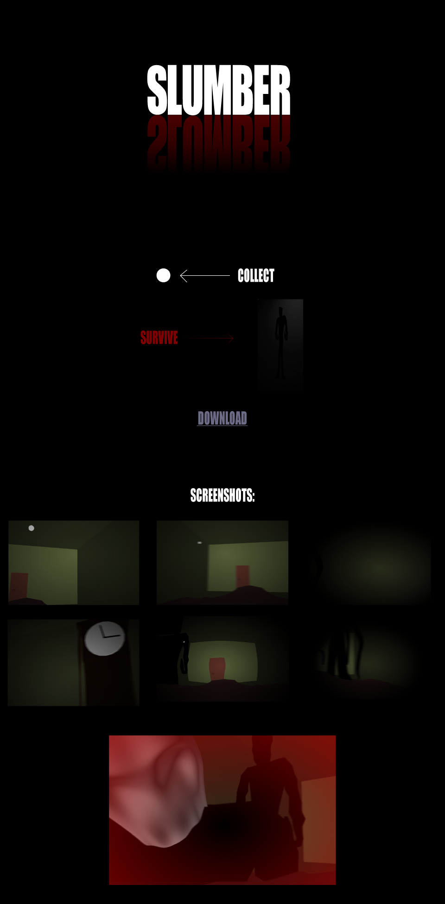

Project Details
SLUMBER was created in C++ and OpenGL for CPE 478. In it, you play as someone experiencing sleep paralysis, and must avoid looking at spooky apparations that appear in the room while collecting small white orbs that increase the player's 'sanity' level and remove the darkening and blurring effects in the room.
It makes use of a technique called 'frame buffering' - the program first renders the entire scene to an image, then runs a shader on that image to achieve effects like blurring, darkening and distortions like radial blur or a 'bulge' effect.